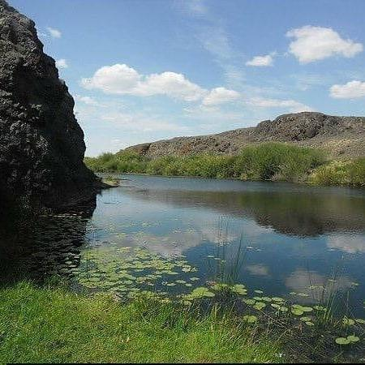
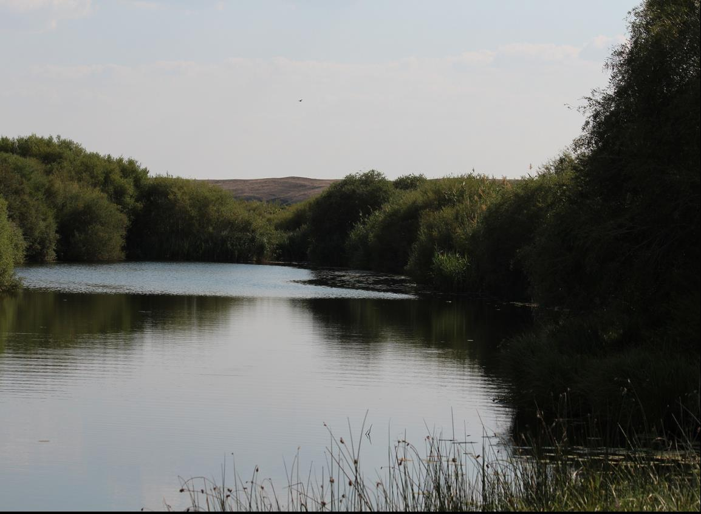

1.2 Екідің жер-су атаулары
Екідің ауылының жер-су атаулары сол жерде болған оқиғаларға байланысты қойылған.
- Маятас – тастары мая сияқты үйіліп жатқан тау.
- Найзатас – тастары найзаның ұшына ұқсас.
- Құлжығылған – боран кезінде адам таудан құлап қайтыс болған жер.
- Айғыржал – тастары аттың жалына ұқсайды.
- Қаракемер – алыстан қарағанда қара болып көрінеді.
- Қыналы – тастарының бетінде қыналар өседі.
- Байсақал – Байсақал есімді адамның құрметіне аталған.
- Сарыбас – Шоң би баласының есімімен аталған.
Қараторғай өзені
Қараторғай өзені – Арғыната тауынан бастау алады.
Сарыторғай өзені
Сарыторғай өзені – Ұлытаудан бастау алады.